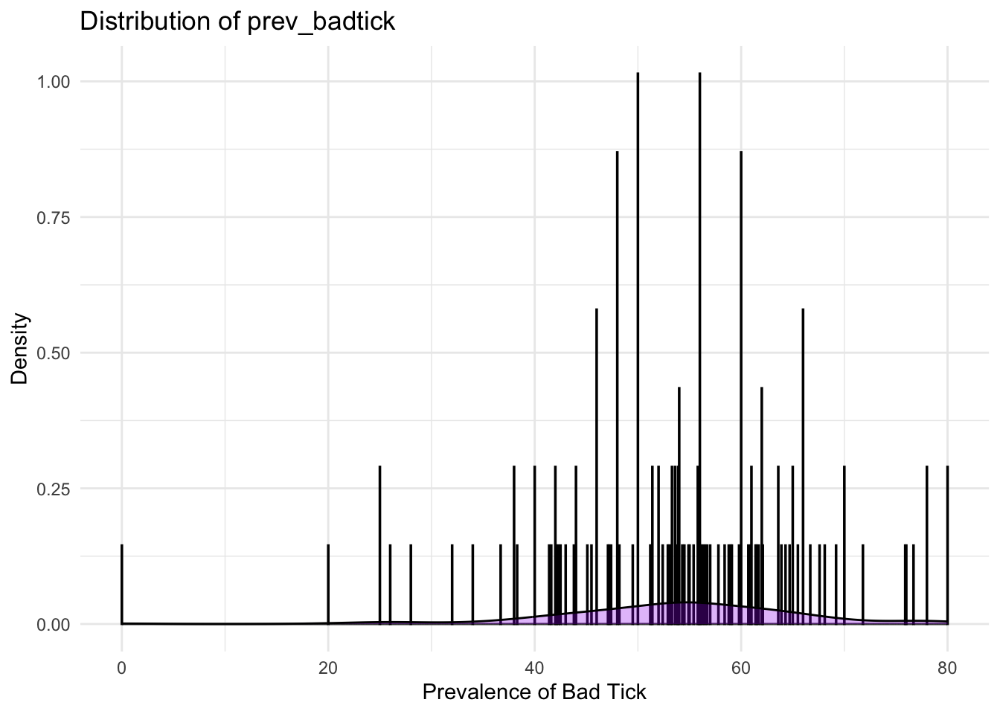

<<<<<<< HEAD Here we can report findings from each of our analyses.
knitr::opts_chunk$set(echo = FALSE, warning = FALSE)
options(repos = c(CRAN = "https://cloud.r-project.org"))EDA
Mary’s Exploratory Analysis
## Installing package into '/Users/nickywilliams/Library/R/arm64/4.4/library'
## (as 'lib' is unspecified)##
## The downloaded binary packages are in
## /var/folders/pj/vmjxwds93714mf9yw4qrzpkw0000gp/T//RtmpZkzuWt/downloaded_packages## Installing package into '/Users/nickywilliams/Library/R/arm64/4.4/library'
## (as 'lib' is unspecified)##
## The downloaded binary packages are in
## /var/folders/pj/vmjxwds93714mf9yw4qrzpkw0000gp/T//RtmpZkzuWt/downloaded_packages## Using GitHub PAT from the git credential store.## Skipping install of 'gtsummary' from a github remote, the SHA1 (429f601a) has not changed since last install.
## Use `force = TRUE` to force installation## ── Attaching core tidyverse packages ──────────────────────── tidyverse 2.0.0 ──
## ✔ dplyr 1.1.4 ✔ readr 2.1.5
## ✔ forcats 1.0.0 ✔ stringr 1.5.1
## ✔ ggplot2 3.5.1 ✔ tibble 3.2.1
## ✔ lubridate 1.9.3 ✔ tidyr 1.3.1
## ✔ purrr 1.0.2
## ── Conflicts ────────────────────────────────────────── tidyverse_conflicts() ──
## ✖ dplyr::filter() masks stats::filter()
## ✖ dplyr::lag() masks stats::lag()
## ℹ Use the conflicted package (<http://conflicted.r-lib.org/>) to force all conflicts to become errors
##
## Attaching package: 'rvest'
##
##
## The following object is masked from 'package:readr':
##
## guess_encoding
##
##
## Linking to GEOS 3.11.0, GDAL 3.5.3, PROJ 9.1.0; sf_use_s2() is TRUE=======
Exploratory Findings

69d70ab7fe3cc7cd6bb7adf9bb4e9851d82ed8ce

<<<<<<< HEAD ### Relationship between lyme_count and average temperatures per month
| term | estimate | p.value |
|---|---|---|
| (Intercept) | -17066.636 | 0.000 |
| jan_19 | 258.449 | 0.000 |
| feb_19 | 3.441 | 0.971 |
| mar_19 | -300.180 | 0.001 |
| apr_19 | 75.273 | 0.461 |
| may_19 | -44.239 | 0.680 |
| jun_19 | -96.697 | 0.429 |
| jul_19 | 264.719 | 0.038 |
| aug_19 | 244.749 | 0.041 |
| sep_19 | -272.592 | 0.000 |
| oct_19 | -79.027 | 0.533 |
| nov_19 | 39.460 | 0.686 |
| dec_19 | 8.347 | 0.873 |
| jan_20 | 204.935 | 0.086 |
| feb_20 | -104.129 | 0.104 |
| mar_20 | 394.157 | 0.002 |
| apr_20 | -505.587 | 0.000 |
| may_20 | -1.507 | 0.992 |
| jun_20 | -270.712 | 0.032 |
| jul_20 | 33.252 | 0.000 |
| aug_20 | -137.283 | 0.222 |
| sep_20 | 284.838 | 0.024 |
| oct_20 | 41.076 | 0.778 |
| nov_20 | -127.534 | 0.059 |
| dec_20 | -280.467 | 0.000 |
| jan_21 | -212.407 | 0.004 |
| feb_21 | 122.543 | 0.128 |
| mar_21 | -243.546 | 0.016 |
| apr_21 | 424.075 | 0.000 |
| may_21 | 259.209 | 0.049 |
| jun_21 | -122.999 | 0.097 |
| jul_21 | -547.860 | 0.000 |
| aug_21 | 682.250 | 0.000 |
| sep_21 | 47.721 | 0.670 |
| oct_21 | 152.558 | 0.101 |
| nov_21 | -388.754 | 0.001 |
| dec_21 | 315.730 | 0.000 |
Considering that Lyme is generally less prevalent in cold temperature, it makes sense that there is a significantly negative number of lyme in below freezing temperatures. There is a large amount of variation of estimate between each month with not much of a pattern.
=======
 >>>>>>>
69d70ab7fe3cc7cd6bb7adf9bb4e9851d82ed8ce
>>>>>>>
69d70ab7fe3cc7cd6bb7adf9bb4e9851d82ed8ce
<<<<<<< HEAD broom::tidy(lyme_rate_vs_population) |> select(term, estimate, p.value) |>knitr::kable(digits =3)
This linear regression analyzes the relationship between Lyme rate and tick population density and total ticks collected. Intercept estimate was 121 (SE: 16.4), with a test statistic of 7.39 and p-value<0.005. Therefore the intercept is highly significant, however the predictors are not. This demonstrates a weak association between Lyme rates and the variables.
=======
<br>
>>>>>>> 69d70ab7fe3cc7cd6bb7adf9bb4e9851d82ed8ce

<br>

<br>

<br>

<<<<<<< HEAD
#Examination of log-linear regression
log_model <- lm(log_lyme_count ~ log_total_ticks + log_tick_density + b_burgdorferi_percent, data = tick_lyme_weather_log)
coefficients_table <- broom::tidy(log_model) |>
select(term, estimate, p.value) |>
knitr::kable(digits = 3, caption = "Regression Coefficients")
# Extract model summary statistics
model_summary <- glance(b_burgdorferi_percent_vs_population)
summary_table <- data.frame(
`Residual Standard Error` = model_summary$sigma,
`Multiple R-squared` = model_summary$r.squared,
`Adjusted R-squared` = model_summary$adj.r.squared,
`F-statistic` = model_summary$statistic,
`p-value` = model_summary$p.value
) |>
knitr::kable(digits = 3, caption = "Model Summary")
# Print all tables
print(coefficients_table)
print(summary_table)The logarithmic analysis found that the total number of ticks found and the B. burgdoferi percent had a positive, significant association with increased lyme disease rates. The low R^2 value demonstrates significant variability. Therefore further analysis with environmental, demographic and behavioral data would be beneficial.
Statistics
Kaleb Analytic Edits:
## Rows: 138 Columns: 27
## ── Column specification ────────────────────────────────────────────────────────
## Delimiter: ","
## chr (7): name, county_centroid, abbrev, swis, nysp_zone, nyc, geometry
## dbl (17): year, total_ticks_collected, tick_population_density, ticks_teste...
## lgl (2): dos_ll, dosll_date
## date (1): datemod
##
## ℹ Use `spec()` to retrieve the full column specification for this data.
## ℹ Specify the column types or set `show_col_types = FALSE` to quiet this message.## Saving 7 x 5 in image
## Saving 7 x 5 in image
## Saving 7 x 5 in image## Saving 7 x 5 in image
## Saving 7 x 5 in image## `geom_smooth()` using method = 'loess' and formula = 'y ~ x'## Saving 7 x 5 in image
## `geom_smooth()` using method = 'loess' and formula = 'y ~ x'##
## Call:
## lm(formula = log_cases ~ b_burgdorferi_percent + avg_temp, data = data)
##
## Residuals:
## Min 1Q Median 3Q Max
## -1.3960 -0.2972 0.1318 0.3733 0.9181
##
## Coefficients:
## Estimate Std. Error t value Pr(>|t|)
## (Intercept) -2.051909 0.797594 -2.573 0.011199 *
## b_burgdorferi_percent 0.013028 0.003553 3.667 0.000355 ***
## avg_temp 0.076001 0.016203 4.690 6.72e-06 ***
## ---
## Signif. codes: 0 '***' 0.001 '**' 0.01 '*' 0.05 '.' 0.1 ' ' 1
##
## Residual standard error: 0.5007 on 132 degrees of freedom
## (3 observations deleted due to missingness)
## Multiple R-squared: 0.2131, Adjusted R-squared: 0.2012
## F-statistic: 17.87 on 2 and 132 DF, p-value: 1.353e-07| Characteristic | Beta | 95% CI1 | p-value |
|---|---|---|---|
| (Intercept) | -2.1 | -3.6, -0.47 | 0.011 |
| % Ticks Carry | 0.01 | 0.01, 0.02 | <0.001 |
| Avg Temp | 0.08 | 0.04, 0.11 | <0.001 |
| 1 CI = Confidence Interval | |||
| Characteristic | Overall N = 1381 |
Albany N = 31 |
Allegany N = 31 |
Broome N = 21 |
Cattaraugus N = 31 |
Cayuga N = 31 |
Chautauqua N = 31 |
Chemung N = 11 |
Chenango N = 21 |
Clinton N = 31 |
Columbia N = 31 |
Cortland N = 11 |
Delaware N = 31 |
Dutchess N = 31 |
Erie N = 31 |
Essex N = 21 |
Franklin N = 31 |
Fulton N = 31 |
Genesee N = 31 |
Greene N = 31 |
Hamilton N = 31 |
Herkimer N = 11 |
Jefferson N = 31 |
Livingston N = 21 |
Madison N = 11 |
Monroe N = 31 |
Montgomery N = 31 |
Niagara N = 21 |
Oneida N = 31 |
Onondaga N = 31 |
Ontario N = 31 |
Orange N = 31 |
Orleans N = 31 |
Oswego N = 31 |
Otsego N = 31 |
Rensselaer N = 31 |
Rockland N = 31 |
Saratoga N = 31 |
Schenectady N = 31 |
Schoharie N = 31 |
Schuyler N = 21 |
Seneca N = 21 |
St. Lawrence N = 31 |
Steuben N = 21 |
Suffolk N = 31 |
Sullivan N = 31 |
Tompkins N = 31 |
Ulster N = 31 |
Warren N = 31 |
Washington N = 31 |
Wayne N = 11 |
Westchester N = 31 |
Wyoming N = 21 |
Yates N = 11 |
|---|---|---|---|---|---|---|---|---|---|---|---|---|---|---|---|---|---|---|---|---|---|---|---|---|---|---|---|---|---|---|---|---|---|---|---|---|---|---|---|---|---|---|---|---|---|---|---|---|---|---|---|---|---|---|
| lyme_count | 343.91 (330.00) | 865.00 (0.00) | 59.00 (0.00) | 953.00 (0.00) | 95.00 (0.00) | 96.00 (0.00) | 52.00 (0.00) | 117.00 (NA) | 254.00 (0.00) | 134.00 (0.00) | 812.00 (0.00) | 217.00 (NA) | 242.00 (0.00) | 1,045.00 (0.00) | 505.00 (0.00) | 129.00 (0.00) | 90.00 (0.00) | 159.00 (0.00) | 30.00 (0.00) | 612.00 (0.00) | 3.00 (0.00) | 100.00 (NA) | 170.00 (0.00) | 73.00 (0.00) | 121.00 (NA) | 241.00 (0.00) | 88.00 (0.00) | 10.00 (0.00) | 395.00 (0.00) | 315.00 (0.00) | 84.00 (0.00) | 878.00 (0.00) | 10.00 (0.00) | 283.00 (0.00) | 313.00 (0.00) | 1,222.00 (0.00) | 481.00 (0.00) | 494.00 (0.00) | 458.00 (0.00) | 157.00 (0.00) | 124.00 (0.00) | 56.00 (0.00) | 268.00 (NA) | 181.00 (0.00) | 1,269.00 (0.00) | 139.00 (0.00) | 405.00 (0.00) | 657.00 (0.00) | 295.00 (0.00) | 323.00 (0.00) | 120.00 (NA) | 493.00 (0.00) | 29.00 (0.00) | 55.00 (NA) |
| Unknown | 3 | 0 | 0 | 0 | 1 | 0 | 0 | 0 | 0 | 0 | 0 | 0 | 0 | 0 | 0 | 0 | 0 | 0 | 0 | 0 | 0 | 0 | 0 | 0 | 0 | 0 | 0 | 0 | 0 | 0 | 0 | 0 | 0 | 0 | 0 | 0 | 0 | 0 | 0 | 0 | 0 | 0 | 2 | 0 | 0 | 0 | 0 | 0 | 0 | 0 | 0 | 0 | 0 | 0 |
| avg_temp | 47.82 (2.67) | 48.72 (1.36) | 47.42 (1.27) | 47.10 (1.37) | 47.09 (1.69) | 47.94 (1.64) | 48.80 (1.32) | 48.95 (NA) | 47.04 (0.53) | 44.43 (1.75) | 49.75 (1.35) | 47.18 (NA) | 45.84 (1.25) | 50.92 (1.00) | 49.02 (1.71) | 42.16 (2.20) | 42.92 (1.80) | 45.74 (1.50) | 48.24 (1.58) | 47.44 (1.47) | 42.00 (1.70) | 44.61 (NA) | 46.09 (1.74) | 48.23 (1.48) | 47.08 (NA) | 49.21 (1.58) | 47.79 (1.56) | 48.99 (2.45) | 46.27 (1.55) | 48.13 (1.68) | 48.53 (1.57) | 50.87 (0.93) | 48.88 (1.82) | 47.60 (1.80) | 45.61 (1.43) | 48.71 (1.57) | 53.27 (1.05) | 47.45 (1.37) | 48.35 (1.39) | 46.27 (1.60) | 48.51 (0.18) | 49.67 (0.14) | 45.59 (NA) | 48.38 (0.02) | 53.45 (0.71) | 47.98 (1.20) | 47.35 (1.42) | 48.89 (1.27) | 44.66 (1.49) | 47.01 (1.22) | 49.30 (NA) | 53.40 (0.77) | 47.06 (2.12) | 49.13 (NA) |
| Unknown | 3 | 0 | 0 | 0 | 1 | 0 | 0 | 0 | 0 | 0 | 0 | 0 | 0 | 0 | 0 | 0 | 0 | 0 | 0 | 0 | 0 | 0 | 0 | 0 | 0 | 0 | 0 | 0 | 0 | 0 | 0 | 0 | 0 | 0 | 0 | 0 | 0 | 0 | 0 | 0 | 0 | 0 | 2 | 0 | 0 | 0 | 0 | 0 | 0 | 0 | 0 | 0 | 0 | 0 |
| b_burgdorferi_percent | 53.72 (12.09) | 62.37 (9.12) | 55.33 (13.61) | 57.05 (13.65) | 54.43 (1.80) | 56.67 (3.06) | 59.37 (4.90) | 56.00 (NA) | 66.95 (18.46) | 60.43 (8.07) | 56.60 (4.26) | 52.90 (NA) | 55.57 (11.06) | 58.37 (18.74) | 46.67 (7.57) | 58.90 (7.07) | 46.77 (11.66) | 57.23 (3.20) | 50.57 (22.72) | 58.93 (2.61) | 25.00 (25.00) | 38.00 (NA) | 77.57 (0.75) | 60.00 (14.14) | 50.00 (NA) | 50.63 (6.77) | 54.80 (7.06) | 46.75 (1.77) | 52.67 (4.16) | 46.53 (4.39) | 63.43 (3.09) | 48.67 (9.87) | 41.13 (15.67) | 56.50 (11.69) | 61.77 (4.44) | 56.27 (5.66) | 46.00 (26.15) | 60.07 (6.21) | 55.90 (4.75) | 54.73 (7.96) | 61.00 (7.07) | 51.00 (7.07) | 45.33 (3.06) | 64.00 (2.83) | 50.77 (7.97) | 52.00 (2.00) | 52.37 (6.56) | 56.90 (11.25) | 49.37 (7.20) | 54.97 (15.06) | 60.00 (NA) | 48.00 (19.29) | 41.35 (6.58) | 20.00 (NA) |
| 1 Mean (SD) | ||||||||||||||||||||||||||||||||||||||||||||||||||||||
| Summary Statistics by County | ||||||
| Non-Missing Years | All Year Mean Lyme Cases | Mean Temperature | SD | Mean B. burgdorferi % | SD | |
|---|---|---|---|---|---|---|
| Albany | 3.00 | 865.00 | 48.72 | 1.36 | 62.37 | 9.12 |
| Allegany | 3.00 | 59.00 | 47.42 | 1.27 | 55.33 | 13.61 |
| Broome | 2.00 | 953.00 | 47.10 | 1.37 | 57.05 | 13.65 |
| Cattaraugus | 3.00 | 95.00 | 47.09 | 1.69 | 54.43 | 1.80 |
| Cayuga | 3.00 | 96.00 | 47.94 | 1.64 | 56.67 | 3.06 |
| Chautauqua | 3.00 | 52.00 | 48.80 | 1.32 | 59.37 | 4.90 |
| Chemung | 1.00 | 117.00 | 48.95 | NA | 56.00 | NA |
| Chenango | 2.00 | 254.00 | 47.04 | 0.53 | 66.95 | 18.46 |
| Clinton | 3.00 | 134.00 | 44.43 | 1.75 | 60.43 | 8.07 |
| Columbia | 3.00 | 812.00 | 49.75 | 1.35 | 56.60 | 4.26 |
| Cortland | 1.00 | 217.00 | 47.18 | NA | 52.90 | NA |
| Delaware | 3.00 | 242.00 | 45.84 | 1.25 | 55.57 | 11.06 |
| Dutchess | 3.00 | 1,045.00 | 50.92 | 1.00 | 58.37 | 18.74 |
| Erie | 3.00 | 505.00 | 49.02 | 1.71 | 46.67 | 7.57 |
| Essex | 2.00 | 129.00 | 42.16 | 2.20 | 58.90 | 7.07 |
| Franklin | 3.00 | 90.00 | 42.92 | 1.80 | 46.77 | 11.66 |
| Fulton | 3.00 | 159.00 | 45.74 | 1.50 | 57.23 | 3.20 |
| Genesee | 3.00 | 30.00 | 48.24 | 1.57 | 50.57 | 22.72 |
| Greene | 3.00 | 612.00 | 47.44 | 1.47 | 58.93 | 2.61 |
| Hamilton | 3.00 | 3.00 | 42.00 | 1.70 | 25.00 | 25.00 |
| Herkimer | 1.00 | 100.00 | 44.61 | NA | 38.00 | NA |
| Jefferson | 3.00 | 170.00 | 46.09 | 1.74 | 77.57 | 0.75 |
| Livingston | 2.00 | 73.00 | 48.23 | 1.48 | 60.00 | 14.14 |
| Madison | 1.00 | 121.00 | 47.08 | NA | 50.00 | NA |
| Monroe | 3.00 | 241.00 | 49.21 | 1.58 | 50.63 | 6.77 |
| Montgomery | 3.00 | 88.00 | 47.79 | 1.56 | 54.80 | 7.06 |
| Niagara | 2.00 | 10.00 | 48.99 | 2.45 | 46.75 | 1.77 |
| Oneida | 3.00 | 395.00 | 46.27 | 1.55 | 52.67 | 4.16 |
| Onondaga | 3.00 | 315.00 | 48.13 | 1.68 | 46.53 | 4.39 |
| Ontario | 3.00 | 84.00 | 48.53 | 1.57 | 63.43 | 3.09 |
| Orange | 3.00 | 878.00 | 50.87 | 0.93 | 48.67 | 9.87 |
| Orleans | 3.00 | 10.00 | 48.88 | 1.82 | 41.13 | 15.67 |
| Oswego | 3.00 | 283.00 | 47.60 | 1.80 | 56.50 | 11.69 |
| Otsego | 3.00 | 313.00 | 45.61 | 1.43 | 61.77 | 4.44 |
| Rensselaer | 3.00 | 1,222.00 | 48.71 | 1.57 | 56.27 | 5.66 |
| Rockland | 3.00 | 481.00 | 53.27 | 1.05 | 46.00 | 26.15 |
| Saratoga | 3.00 | 494.00 | 47.45 | 1.37 | 60.07 | 6.21 |
| Schenectady | 3.00 | 458.00 | 48.35 | 1.39 | 55.90 | 4.75 |
| Schoharie | 3.00 | 157.00 | 46.27 | 1.60 | 54.73 | 7.96 |
| Schuyler | 2.00 | 124.00 | 48.51 | 0.18 | 61.00 | 7.07 |
| Seneca | 2.00 | 56.00 | 49.67 | 0.14 | 51.00 | 7.07 |
| St. Lawrence | 3.00 | 268.00 | 45.59 | NA | 45.33 | 3.06 |
| Steuben | 2.00 | 181.00 | 48.38 | 0.02 | 64.00 | 2.83 |
| Suffolk | 3.00 | 1,269.00 | 53.45 | 0.71 | 50.77 | 7.97 |
| Sullivan | 3.00 | 139.00 | 47.98 | 1.20 | 52.00 | 2.00 |
| Tompkins | 3.00 | 405.00 | 47.35 | 1.42 | 52.37 | 6.56 |
| Ulster | 3.00 | 657.00 | 48.89 | 1.27 | 56.90 | 11.25 |
| Warren | 3.00 | 295.00 | 44.66 | 1.49 | 49.37 | 7.20 |
| Washington | 3.00 | 323.00 | 47.01 | 1.22 | 54.97 | 15.06 |
| Wayne | 1.00 | 120.00 | 49.30 | NA | 60.00 | NA |
| Westchester | 3.00 | 493.00 | 53.40 | 0.77 | 48.00 | 19.29 |
| Wyoming | 2.00 | 29.00 | 47.06 | 2.12 | 41.35 | 6.58 |
| Yates | 1.00 | 55.00 | 49.13 | NA | 20.00 | NA |
======= # Model Findings
69d70ab7fe3cc7cd6bb7adf9bb4e9851d82ed8ce